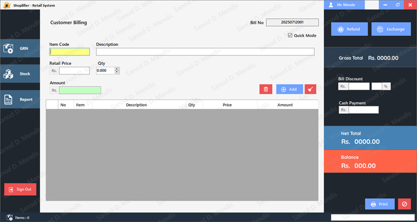
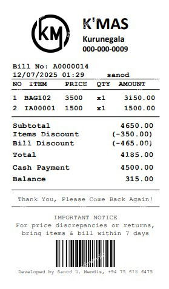
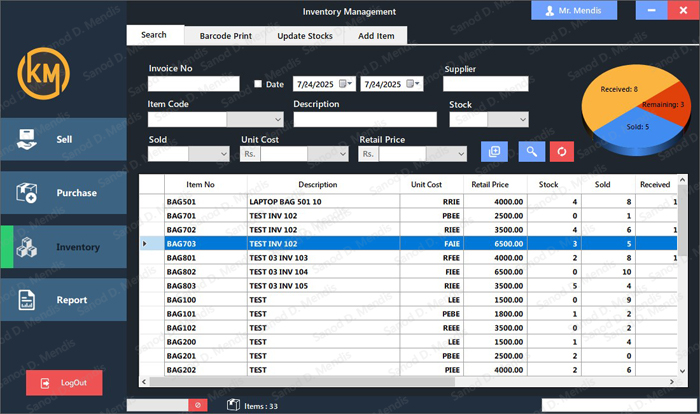
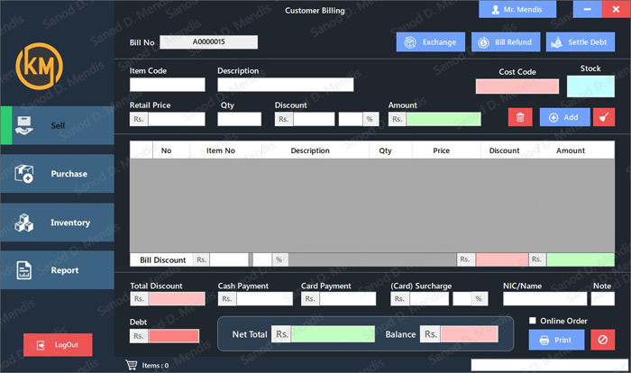
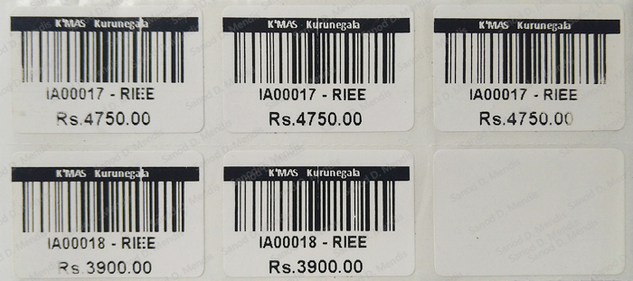
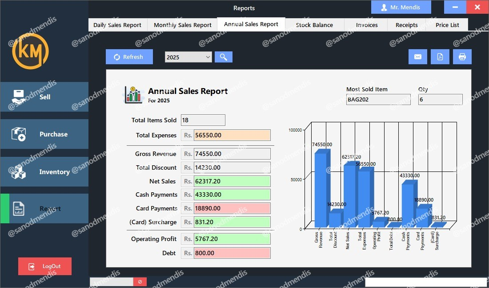

A closed-source, commercial POS solution developed in C#, tailored for diverse business needs. Multiple versions of the system are available, each optimized for specific industries and operational scales—from small retailers to multi-branch enterprises. Whether offline or cloud-enabled, the POS adapts seamlessly to the client's operational environment with modular structure and client-specific customization making it a top-tier solution in today's competitive retail and wholesale markets.
StandardPOS - Essential Business Operations

StandardPOS with all essential features for daily operationsThe StandardPOS includes all essential features required for efficient daily operations, providing a solid foundation for small to medium-sized businesses looking to streamline their retail processes.
Core Features:
- Customer Billing with intuitive interface
- GRN (Goods Received Note) Management for inventory tracking
- Comprehensive Inventory & Stock Control
- Detailed Reports & Analytics for business insights
- Custom Receipt generation and printing
- Role-based Access Control for security
- Quick Mode for faster customer billing during peak hours

Customer billing interface
Inventory management systemPremiumPOS - Advanced Business Intelligence

PremiumPOS with enhanced capabilities and advanced featuresThe PremiumPOS elevates the core system with advanced capabilities, designed for businesses that require sophisticated inventory management, detailed analytics and premium support services.
Premium Enhancements:
- All features from StandardPOS as foundation
- Advanced Barcode Generation & Label Printing capabilities
- Extended Reporting Filters & Interactive Dashboards
- Priority Support & Early Access to Feature Rollouts
- Enhanced analytics and business intelligence tools

Advanced barcode generation and label printing
Extended reporting and analytics dashboardAdvanced System Features
Beyond the core POS functionality, the system includes enterprise-grade features that ensure business continuity, data security and operational flexibility.
System Infrastructure:
- Integrated Notification System for real-time alerts
- Automated System Updater for streamlined version upgrades
- Comprehensive Backup Manager (local & cloud options)
- Cloud version ideal for enterprise businesses with multiple branches
- Centralized management and real-time data synchronization
Mobility & Control
Business owners and managers are empowered with a dedicated mobile companion app, providing a real-time dashboard to monitor sales, stock and branch performance anytime, anywhere.
Mobile Features:
- Real-time sales monitoring and performance tracking
- Stock level alerts and inventory notifications
- Multi-branch performance comparison and analytics
- Remote access to critical business metrics
Intelligent & Future-Ready Development
AI-Powered Roadmap:
- AI-powered modules to automate repetitive tasks
- Predictive analytics for inventory optimization
- Smart restocking suggestions based on sales patterns
- Customer trend analysis and behavior insights
- Advanced fraud detection and prevention systems
Our development roadmap focuses on integrating cutting-edge AI technologies to transform traditional retail operations. We're not just keeping up with current market demands—we're building the future of retail technology.
Built for Performance & Scalability
This POS system represents a comprehensive solution that scales from single-store operations to enterprise-level multi-branch management. The modular architecture allows for customization while maintaining system stability and performance.
Built for performance, tailored for your business and engineered for tomorrow. Whether you're running a small retail store or managing a chain of outlets, our POS system adapts to your specific needs while providing room for future growth.